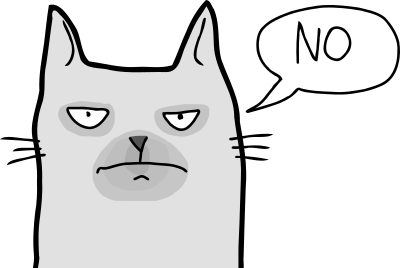
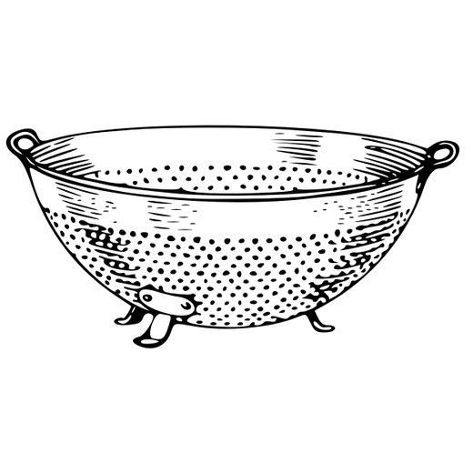
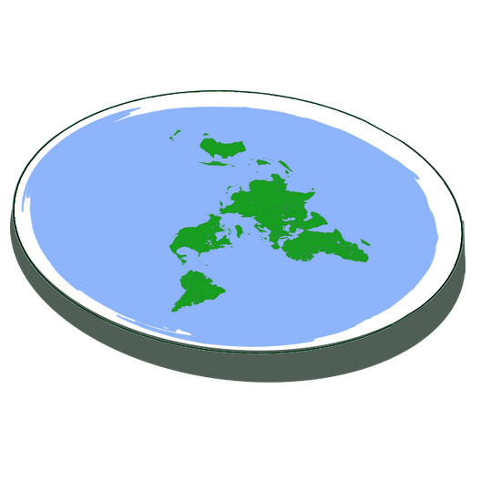
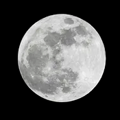

Tervetuloa Rakastamallesi Uutissivustolle!
Et ole kirjautunut sisään! Sinun ei pitäisi.
Rakastamasi Uutissivusto
Ikkuna rinnakkaisuniversumiin
Tämän päivän suositut artikkelit ja viestit:
Tiesitkö että pisin suomenkielinen sana kumarreksituteskenteleentuvaisehkollaismaisekkuudellisennesk-enteluttelemattomammuuksissansakaankopahan on 102 kirjainta pitkä ja sen on luonut Artturi Kannisto?
Tämän päivän suositeltu artikkeli
Julkaistu 4. huhtikuuta
Kissojen evoluutiota on lykätty loputtomiin vaikean tilanteen vuoksi: näkyvimmät yksilöt sitoutuivat spontaanisti yrittämään saada punaisen pisteen, eivätkä olleet pystyneet irtautumaan silmukasta
Kissojen tiedottaja kieltäytyi kommentoimasta.
Maan tuhoutuminen
on väistämätöntä: tuomiopäivän päivämäärä ennustettiin jopa 2 miljardin vuoden tarkkuudella
Kaudenvaihtoryhmän aktivistit
söivät viime viikonloppuna eri arvioiden mukaan lunta 380-410 kiloa auttamaan kevään alkamista
Pohjolan emäntä Louhi
pelotti tuhansia Graminstan käyttäjiä, on pysyvästi estetty alustalta
Lentävä spagettihirviökirkko
on tunnustettu virallisesti Suomessa, se johtaa satojen ramen-kauppojen siunaukseen eri puolilla maata
Litteän Maan seuran itse julistautuneen johtaja
on ilmoitettu kadonneen saavuttuaan horisontille
Kuu-ukon henkilöllisyys
on vihdoin todettu! Kuvaus vastaa etsittyä miestä